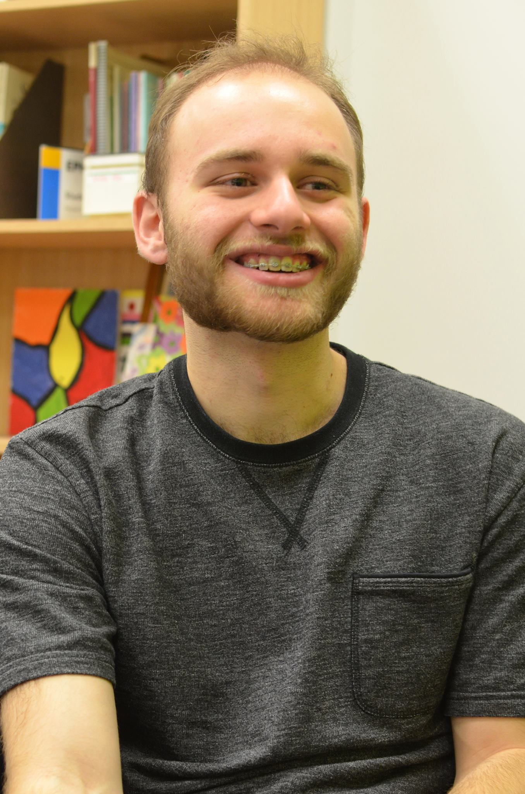

Article and Photos by Kayla Douglas Photos by Maddie Binning
Uploaded on January 16, 2016
For third-year social work student Michael Friedman, it all started when he discovered a lump on his head in the shower in April 2012.
“I thought it was notable,” he said, “so I decided to go [to the doctor’s] and they told me it was some sort of skin condition.”
Over the next few months, the lump grew to the size of an apricot. After it got too big to handle, the then-16-year-old Friedman went to get it removed, and on his second day of grade 12, Friedman was told that he had cancer.
Following his diagnosis, Friedman had to go through seven months of chemo.
“In fourteen rounds [of chemo], people come for the start and the end, almost like a race,” Friedman said. “The start and the finish line are when people are cheering you on.”
So, during the times his friends were busy with schoolwork or his parents were occupied with Friedman’s four other siblings, music became his support system.
“Music was my thing to do. When I was at the hospital, I wouldn’t read [or] watch TV,” Friedman said. “I’d just be listening to music.”
For Friedman, music allowed him to come to terms with his fight with cancer and helped him work through it, but music has always been a huge part of his life.
Friedman, who is now cancer-free and will be celebrating his 20th birthday later this month, learned to play the bass and drums when he was 13 years old.
“My brother said, ‘Hey, I’m in a punk band now. You should join’,” he said. However, Friedman didn’t play any instruments yet, so his brother taught him bass.
His brother gave him two lessons, and within a couple of weeks, Friedman played his first show.
“I was really garbage, but I was just starting off,” Friedman admitted, laughing.
As Friedman got better at bass, he joined a progressive rock band. Throughout this time, he was also learning to play drums.
“Banging on things is always fun,” he said, but playing the drums allowed Friedman to make music in a way that was also a good outlet for frustrations.
On drums, Friedman is widely self-taught and learns by ear.
“For me, self-taught was listening to music and being really bad at playing it at first and then learning how to be good at playing it,” he said. “I was just plugging in music and playing along.”
Friedman started off by playing “Yellow” by Coldplay, and as he started to get good at it, Friedman began to wonder what else he was capable of.
“I saw all these drummers doing amazing things on stage,” Friedman said, “[and I wondered], ‘How can I get to be like that?’”
As Friedman wanted to start improving on his skills, he was influenced by several bands and different styles of music.
“I really like playing all types of music – even country,” he joked. Friedman played everything from metal-core to jazz.
Now a more proficient and skilled drummer, Friedman is involved in several projects.
He plays in a progressive metal band called Silkmint, a soft alt-rock band called Lakeshore, and he supports solo R&B artist Tali Kouch. He also plays in a jazz/blues band for Musicians@Ryerson.
Because Friedman is in such a wide variety of projects, musical inspiration for him comes from everywhere.
“I’ll pull on a few different bands for each sound,” he said. For his R&B project, he pulls on hip hop/jazz band Monkier, while for Silkmint, Friedman pulls on metal bands such as Intronaut or Karnivool.
Primarily, Friedman plays drums for alt-rock/punk band Six at Best, and has been since 2013.
Friedman’s brother used to be the drummer for the band, but asked him if he wanted to be the new drummer.
After listening to their songs for a while, Friedman felt comfortable enough to join them on one of their sets. His brother became rhythm guitarist for the band instead, and Friedman has been playing drums with them ever since.
Within the next year, Friedman is hoping to tour with Six at Best. The band also recently released a three-song demo.
As for his other projects, Lakeshore has recorded a new song coming out called “No One You Know” and is working on making a music video for it.
In the future, Friedman would like to be a session drummer, or a social worker in the field of pediatric oncology.
For aspiring drummers, Friedman has some advice.
“Don’t think that whatever skills you have now are skills you’re going to have for the rest of your life,” he said. “Don’t let what you’re playing now limit what you can play in the future.”
“I started off with … Coldplay and now I’m playing intricate progressive metal stuff,” he said, laughing. “Started from the bottom, right?”

Spotlight Editor in Chief
Alina Bykova
alina.bykova@ryerson.ca
Want to get your time under the lights? Are you a writer looking to join the Artist Spotlight initiative? E-mail us at music@ryerson.ca to see how!